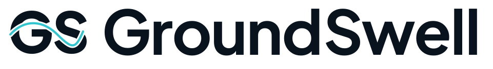
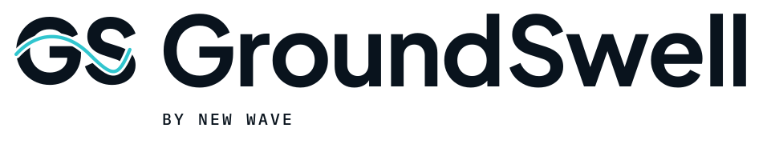
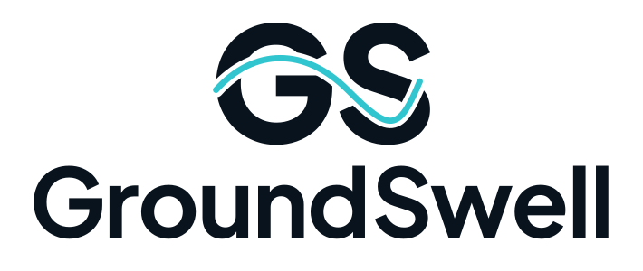
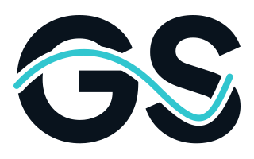
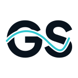
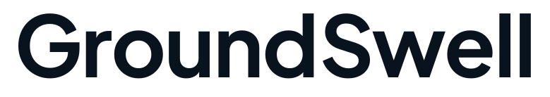

01 / Identity
The logo family.
Two bold initials, connected by one flowing current. The exact New Wave upper crest passes through the GS monogram, pairing with the GroundSwell wordmark and expanding into the wider graphic system.


Primary · Reverse



Endorsed · Color



Endorsed · Reverse



Stacked · Color



Stacked · Reverse



GS · Color



GS · Reverse



Mark · Color



Mark · Reverse


Compact · Color


Compact · Reverse


Micro · Color


Micro · Reverse



Wordmark · Color


Wordmark · Reverse


Outlined SVGs are the production masters. Standard GS artwork starts at 32 px; use Compact at 24–32 px and the solid Micro GS at 16 px. Navy and white single-color files are also included in the logo folder. Live-text companions use the included Plus Jakarta Sans family and explicit character positions.
02 / Foundations
Grounded. Expressive. Connected.
Deep Current
#09131DSignal Cyan
#31C6CFTide Blue
#317B92Amber
#F2A33ACloud White
#F7FAFBSlate
#526271Plus Jakarta Sans / 600–800
Clear ideas.
Strong presence.
Inter / 400–600
A clear everyday voice for proposals, websites, and campaigns.
IBM Plex Mono / 400–500
IDEAS INTO MOMENTUM
0123456789
Digital masters use sRGB. Use dark navy text on cyan or amber; use Cloud White on navy. The complete guide contains measured contrast pairs and print preparation notes.
03 / Custom icon system
One visual rhythm.
Twelve original icons. A shared 32-unit grid, rounded strokes, and wave-informed curves. Color, navy, white, and a currentColor sprite are supplied.
Strategy


Brand Identity


Social Media


Content


Campaigns


Web Design


Integrations


Automation


Audience Insight


Analytics


Community


Momentum


04 / Applications
A connected presence.
Ready-to-use exports and editable vector layouts for social posts, a story, a profile avatar, and a wide digital banner. Business cards, letterhead, and a proposal cover are included in the stationery folder.

Square post


Portrait post


Story

Avatar


Wide banner

05 / Motion
The swell in motion.
A 2.8-second reveal, with a static state for reduced motion. The MP4 adds a short final hold.
Open motion preview and replay · Download MP4 · Download animated SVG

06 / Use the system
Made to be used.
01_Logos contains outlined SVGs, transparent PNGs, and live-text sources.
02_Graphics contains contour fields, a heritage wave reference, and repeating GS patterns.
03_Icons contains every custom icon as an individual file.
04_Fonts contains licensed desktop and web fonts.
05_Templates contains social and stationery artwork.
06_Digital contains motion, favicons, CSS, and brand tokens.
07_Source_References preserves the original New Wave files.
08_Editable_Source contains construction notes and the guide source.
GroundSwell GS identity revision prepared for Joshua Breault, 22 October 2026. The font families are selected existing typefaces; the GroundSwell wordmark is custom-set vector artwork.